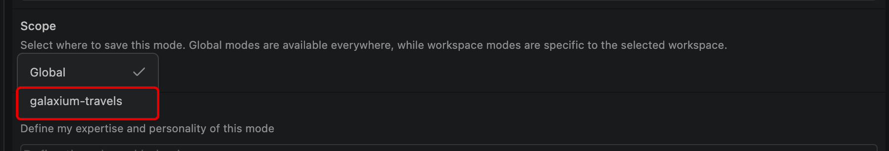
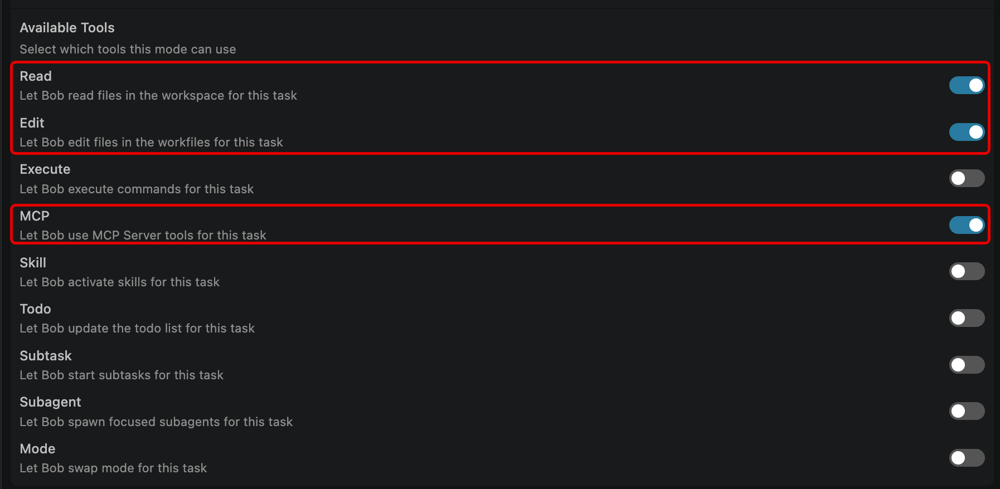
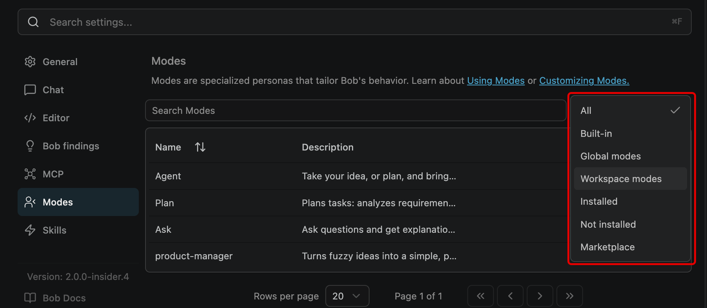
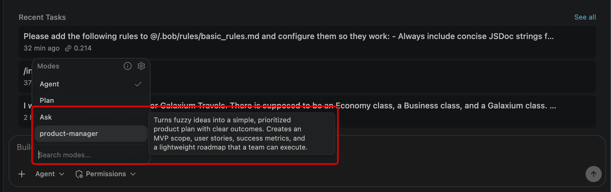
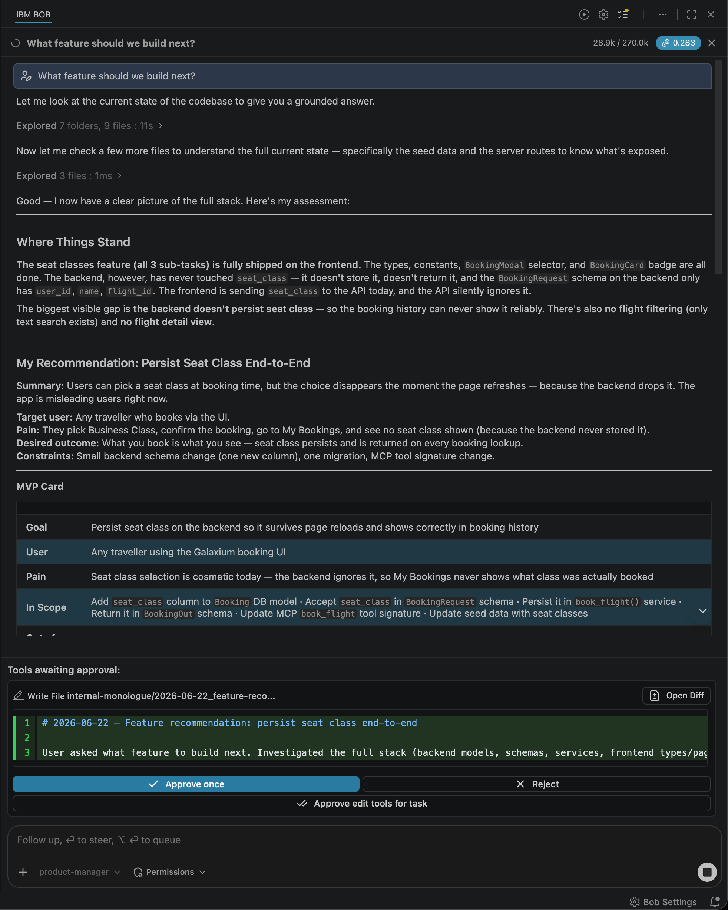

MODULE 3 | TAILOR
CUSTOM MODES
i. Shaping Bob to every role
IBM Bob's standardized, built-in Modes— Agent, Plan, and Ask —cover the most commonly found workflows and use cases that IBM's clients will encounter. But when pushing new frontiers and working at the scale of enterprise, there will inevitably be edge cases and bespoke cases requiring a tailored solution.
Custom Modes allow clients to define their own specialized agentic workflows with Bob: it combines a role definition, behavioral instructions, and a deterministic set of permitted tools. The net result for Bob clients is that, regardless of whether the end-user happens to be a product manager or a senior engineer, the Custom Mode "version" (persona) of Bob they interact with has been pre-tuned and shaped to how they actually work.
ii. Why this matters
For every Bob Mode, whether selected from the built-in Modes or client-tailored Custom Mode, is defined by a universal set of fields:
| FIELD | TYPE | DESCRIPTION |
|---|---|---|
Slug |
Identifier | Unique machine-readable name used to reference the Mode |
Name |
Display name | Human-readable label shown in the Mode selector |
Description |
Non-deterministic | High-level summary of what the Mode does |
Role definition |
Non-deterministic | Defines how Bob should think and behave in this Mode |
When-to-use |
Non-deterministic | Guidance for Mode orchestration (when other Modes should switch to this one) |
Custom instructions |
Non-deterministic | Detailed behavioral instructions for how Bob performs tasks |
Tools |
Deterministic | The set of tools Bob is permitted to use in this Mode |
DETERMINISTIC VS. NON-DETERMINISTIC
The distinction between non-deterministic and deterministic fields matters when defining Custom Modes. The instruction fields guide Bob's behavior, but how Bob interprets and applies these fields is determined probabilistically.
The Tools field is different: it is strictly enforced. Bob is prohibited from using tools unless they are explicitly stated (permissioned) within the Tools field. For example, if a Custom instructions entry calls for use of a tool not inventoried within the Tools field, that instruction will be ignored. This property makes the Tools field— not the prose or contents of the user prompt —the real mechanism for constraining what Bob can do in a Mode.
iii. How to define and create
Custom Modes are created through the Mode settings panel in Bob IDE. You will have plenty of opportunity to try this yourself shortly in the hands-on materials. For reference, however:
- Click the Mode toggle button (may be labelled as Agent, Plan, or Ask at this time)
- From the expanded options, click the cog shaped icon to access Mode Settings
- The Bob Settings panel will open, make sure the Modes tab (left) is selected
- Click the + icon (top-right of the table of existing Modes) to Create new mode
- Fill in the slug, name, scope, custom instructions, and tool permissions
- Save the Mode
HOW TO TOGGLE DIFFERENT AGENTIC MODES
The label assigned to the Mode toggle button will change to reflect the name of the mode that the Agentic Sidebar currently has active. For example, if in the Agent mode, the toggle button will read as Agent. For the sake of clarity, when instructing you to change the Agentic Mode type, this documentation will refer to this toggle button as the Mode toggle.
You can scope a Mode to a single Project-level (stored in .bobmodes), or make it Global-level across all Bob projects and interactions. Creating a Mode through the UI generates a .bobmodes YAML file in the project root, which you can edit directly, commit to the repository so the whole team shares the same Modes, or use as a starting point for asking Bob to generate further Modes.
iv. A sample Custom Mode
To bridge the theoretical aspects discussed so far into a concrete example, consider a Mode built for Product Manager planning that aims to transform feature ideas into a structured, prioritized plan:
| FIELD | VALUE |
|---|---|
Slug |
product-manager |
Scope |
Project |
Instructions |
Transform ideas into a simple, prioritized product plan |
Tools |
Read, Edit, MCP (GitHub integration) |
Excluded tools |
Execute (terminal commands), Browser |
The configuration of Tools speaks to the true capabilities of the Product Manager Custom Mode:
- Read allows Bob to understand existing features and the current state of the code
- Edit allows Bob to produce output documents, such as Markdown plans
- MCP allows Bob to talk to GitHub (reading issues, linking plans to them)
- Execute capabilities are excluded under the
Excluded toolsfield because product work doesn't require running code (and limiting access to only as much as necessary is a security best-practice)
v. Hands-on: Building a Product Manager Custom Mode
In the following steps, you will implement a real-world Product Manager Custom Mode end-to-end with Bob. To do so, you'll need to define its persona, grant it a deliberate set of tools to work with, and then put it to work against a real product manager scenario.
-
Click the Mode toggle button and ensure it is set to Agent mode.
HOW TO TOGGLE DIFFERENT AGENTIC MODES
The label assigned to the Mode toggle button will change to reflect the name of the mode that the Agentic Sidebar currently has active. For example, if in the Agent mode, the toggle button will read as Agent. For the sake of clarity, when instructing you to change the Agentic Mode type, this documentation will refer to this toggle button as the Mode toggle.
{kind=link}
-
Click the cog icon to expose Mode Settings.
{kind=link}
-
The Bob Settings panel will open. Ensure that the Modes tab (left) is selected.
{kind=link}
-
Click the + icon (top-right of the table of existing Modes) to Create new mode.
A new Create new mode panel will open within the Bob IDE.
{kind=link}
-
For the Slug field, enter the following:
-
For the Name field, also enter the same details:
-
For the Description field, enter the following:
-
For the Scope field, click the drop-down menu to expose more options. By default this value is set to
Global.Change the value to the
galaxium-travelsproject.
{kind=link}
-
For the Role definition field, enter the following:
You are Product Manager Mode. You help define what to build and why. You clarify the user problem, propose an MVP, prioritize work, define success metrics, and produce simple, shareable artifacts (MVP card, roadmap, user stories, risks). You keep it practical and relatable for demos—minimal jargon, fast decisions, explicit tradeoffs.
-
For the When to use (optional) field, enter the following:
-
For the Mode-specific Custom Instructions (optional) field, enter the following:
Start by summarizing the request in 2–3 lines and extract: • Target user • Problem/pain • Desired outcome • Constraints (time, scope, dependencies) 2. Ask up to 5 clarifying questions max. If answers are missing, make reasonable assumptions and label them clearly. 3. Produce these demo-friendly outputs every time (keep each section short): • MVP Card: Goal, User, Pain, In Scope (3–6 bullets), Out of Scope (2–4 bullets) • Now / Next / Later roadmap (3–5 bullets per column) • Top 5 user stories with “Done when…” (2–3 acceptance checks each) • Success metrics: 1 Primary, 1–2 Secondary, 1 Guardrail • Risks & open questions (2–4 each) 4. Make tradeoffs explicit: if something is added to MVP, something else must move to Next/Later. 5. End with a single recommended next decision the user should approve (e.g., confirm MVP scope or pick between two options). 6. Keep language simple and relatable; avoid framework names unless the user asks (no RICE/PRD jargon by default). 7. If helpful, include one small diagram (optional), e.g. a simple flow of the user journey.
-
Now comes the point where you can set limitations on which Tools that Bob (and the Custom Mode) are authorized to use.
Toggle ON the following from the list of Available Tools. All other Tools should be left off (default).
Read: Allows Bob to read files in the workspace for this taskEdit: Allows Bob to edit files in the workspace for this taskMCP: Allows Bob to use MCP Server tools for this task
Collectively, these permissions grant the new
product-managerCustom Mode the ability to read files within the project directory, edit those files, and utilize the open-source Model Context Protocol (MCP).
{kind=link}
-
Finally, press the blue Save button (bottom-right corner) to finish defining the
product-managerCustom Mode.
{kind=link}
-
After saving, you'll be returned to the Modes sub-menu of the Bob Settings interface.
Take note of the new tile for the
product-managerCustom Mode that has appeared from the list of Modes.Connect to IBM VPN to access the marketplace
Connection to the Bob Marketplace opens the doors to a tremendous amount of IBM and IBMer-publised Modes, Skills, and more tools that Bob can directly integrate with as part of its workflow. In order to view and access the Marketplace, ensure that your VPN connection to the IBM intranet is active.
{kind=link}
-
To the right of the search bar labeled Search Modes, click the drop-down marked as All.
From the drop-down options, filter by Workspace modes.

{kind=link}
-
Within the Workspace modes list, the
product-managerModes appears alongside its description, confirming that the new Custom Mode was successfully created. These filters can be particularly useful when your Bob project space has accumulated multiple Modes — either ones you've authored yourself, or those that have been installed via the Bob Marketplace.
{kind=link}
-
Return your attention to the Agentic Sidebar session on the right side of the Bob IDE.
Using the Mode toggle button, switch into the newly-defined
product-managermode.
{kind=link}
-
With the
product-managermode activated, copy & paste the following prompt into the session and press Enter to execute.
{kind=link}
THROUGH THE LENS OF A PRODUCT MANAGER
As IBM Bob executes upon this ask and does so within the lens of the product-manager Mode you just defined, it will generate a detailed report about the current state of the Galaxium Travels project. It will first summarize the various functions and purpose of the application, identifying what has been built so far, and what Bob reckons (against its own understanding of such applications and coding best practices) remains missing from a robust and complete version of the service.
Summary Galaxium Travels is a working interplanetary booking app (React + FastAPI + MCP). The last major feature — seat classes (Economy / Business / Galaxium) — was fully shipped across all 6 sub-tasks. The product can now browse flights, register users, book seats by class, cancel, and view history.
MVP Card IBM Bob will define an over-arching goal of the work yet to be done— "Give travelers a complete post-booking experience — confirmation, trip summary, and smarter flight discovery" —and then reason out what components of that work should be treated as In Scope and Out of Scope. The purpose here is defining the immediate, low-hanging opportunities with immediate-to-short-term impacts on users (the Now and Next categories in the following table, respectively) versus those with longer-term-but-out-of-scope impacts (Later).
| NOW | NEXT | LATER |
|---|---|---|
| Booking confirmation screen (high visibility, low effort) | Flight search & filter (origin/destination) | Email / notification on booking |
| "My Trip" detail expand in MyBookings | Date-range filtering | User profile page |
| Backend query params for flight filtering | Fare comparison across seat classes (matrix view) | Payment integration |
| Seat class badge in nav | Saved/favourite routes | Multi-passenger booking |
Additional categories like Top 5 User Stories, Success Metrics, Risks & Open Questions, and Recommended Next Decisions are also captured within the product-manager Mode summary. All of these categories and metrics, of course, are particularly suited to an individual tasked with a Product Manager role in this context!
Continue exploring these details and asking additional prompts within the Agentic Sidebar if you wish, then proceed with the lab guide as we close out with Module 4.
vi. Key takeaways

As the Tailor module wraps up, take a moment to trace back through your progression along the AI Maturity Curve: from conceptualizing IBM Bob as an Assistant; to being able to fully Delegate critical workloads to Bob; to now fully customizing a Tailored Bob workflow that adapts to users and use cases.
- Custom Modes combine non-deterministic instructions with deterministic tool constraints
- Tool restrictions are enforced, not suggested (they are the primary safety mechanism for Custom Modes)
- Rules apply across all Modes (they are not overridden by custom Mode instructions)
- Modes are created either through the UI or by editing
.bobmodesdirectly - Project-scoped Modes are stored in
.bobmodesand are committed to a repository
The final step in the journey— Module 4 | Scale & Extend —awaits.